Lowside Event posters & motion
- No.
- 14
- Year
- 2022–23
- Discipline
- Graphic Design
- Role
- Graphic design, event visual identity
- Format
- Posters, Instagram posts, motion
- For
- Lowside
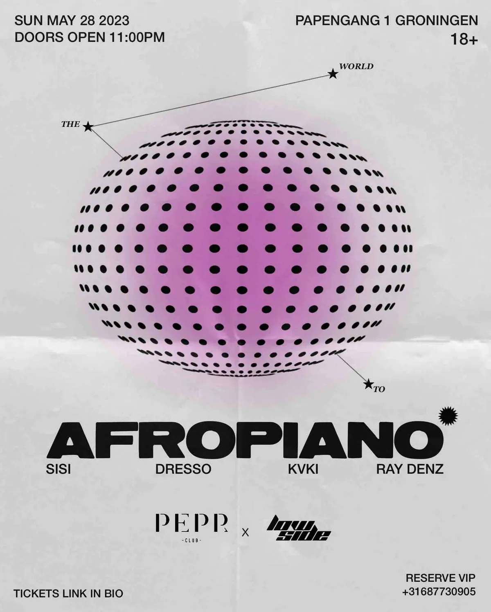
Posters, motion and digital assets for four Lowside events in Groningen.
Return of 10’s
Event poster design for Lowside’s Return of 10’s edition.
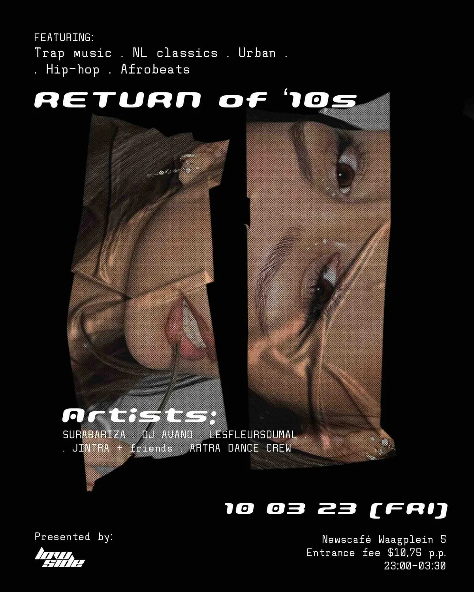
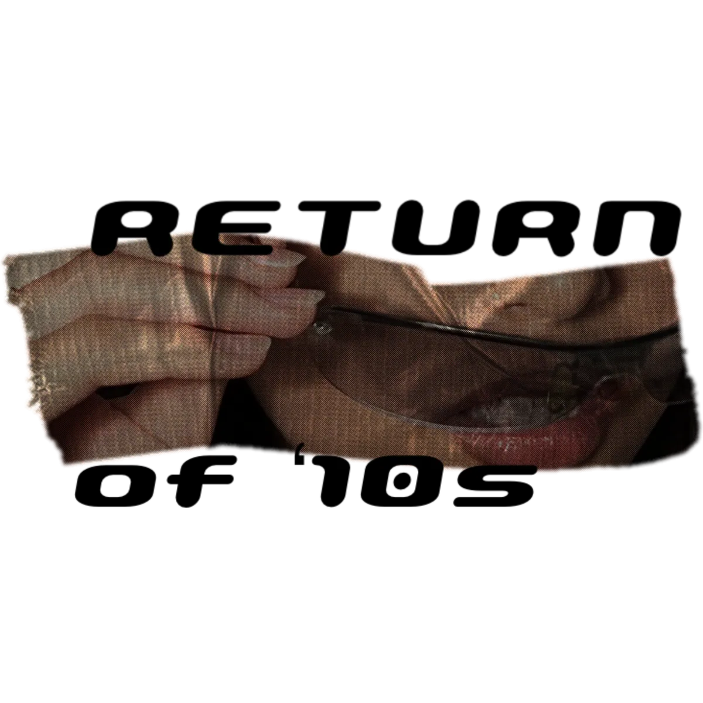
Afropiano
Event poster and digital visual for Lowside’s Afropiano edition.
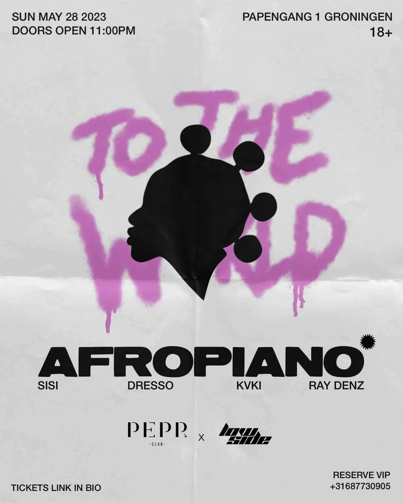
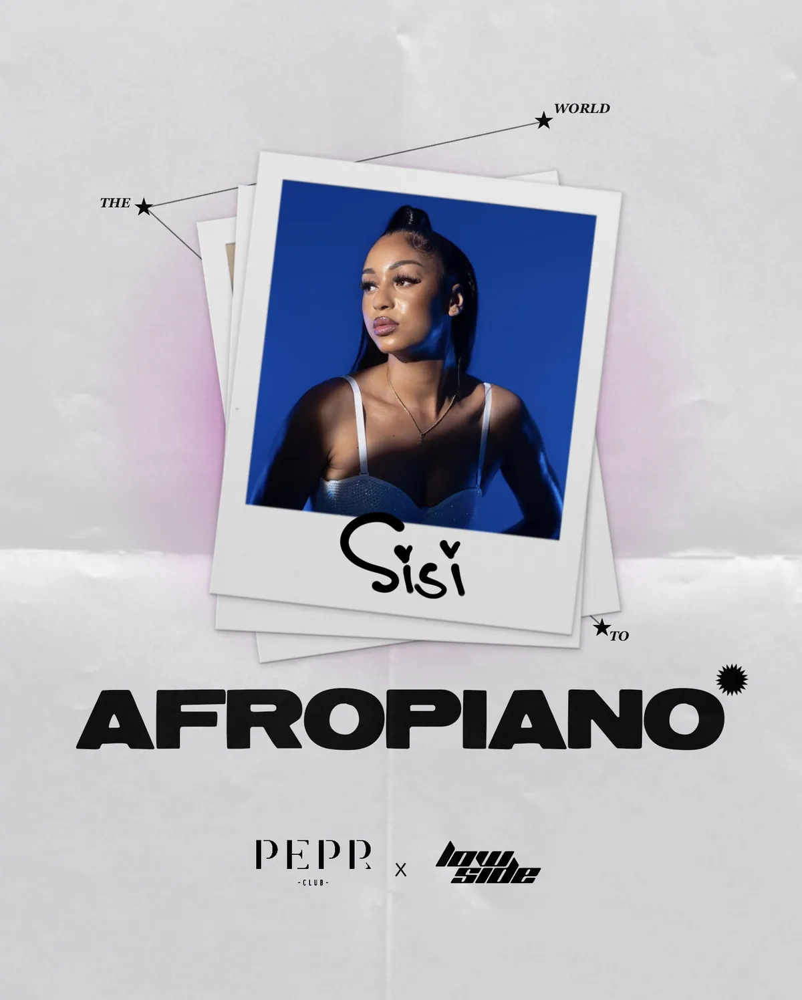
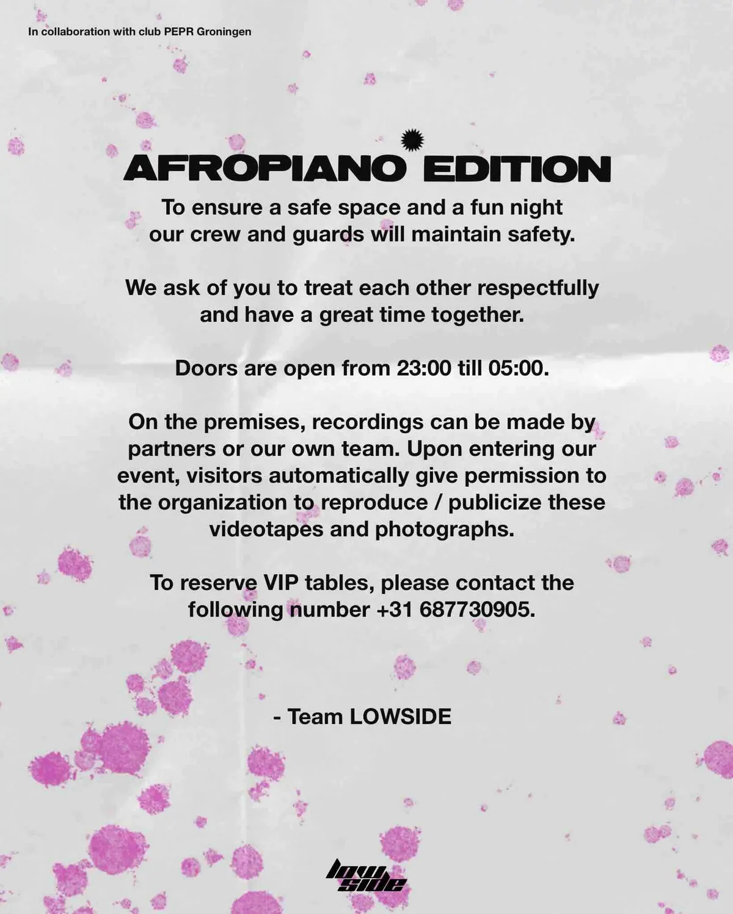
Sip ’n Swap
Event poster and digital assets for a clothing-swap edition.
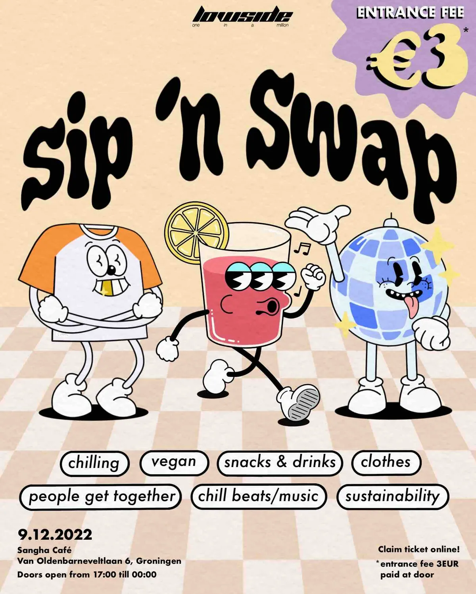
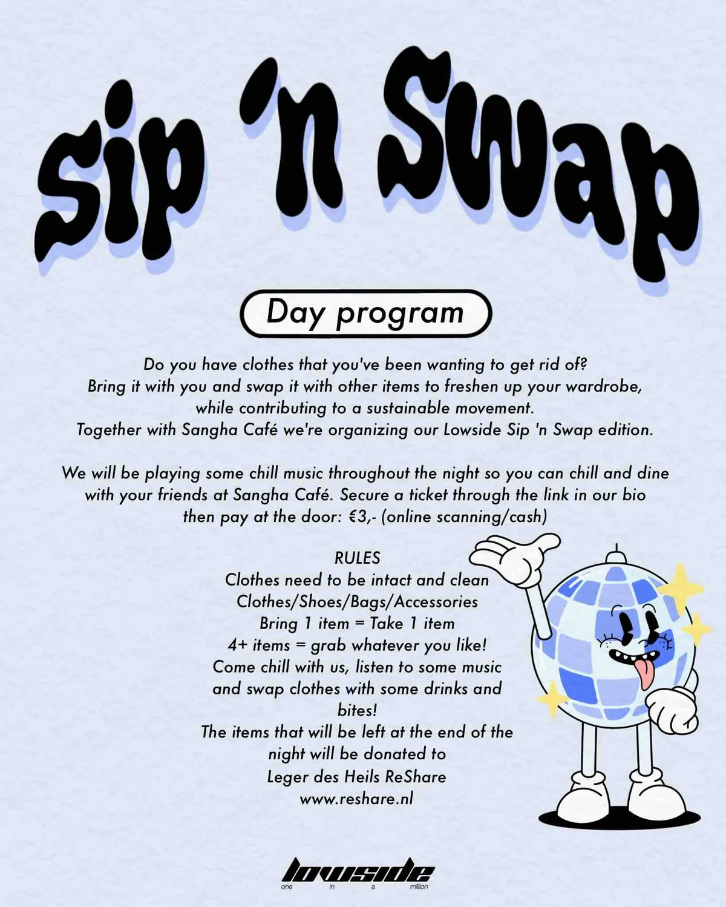
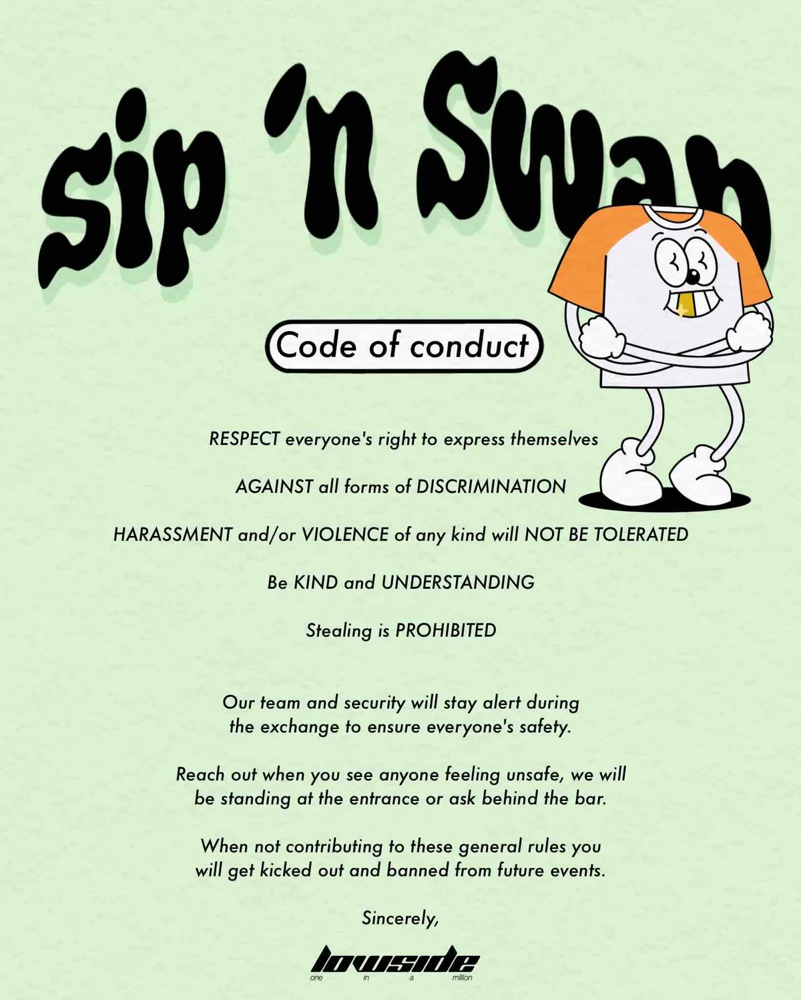
Halloween
Halloween event poster and digital visual for Lowside.
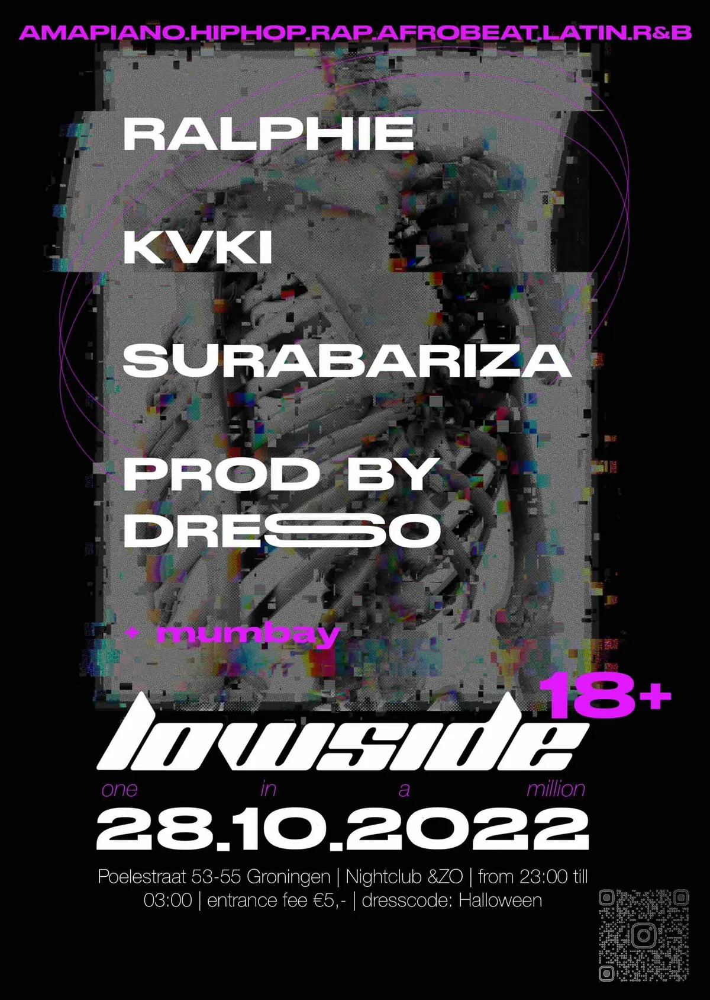
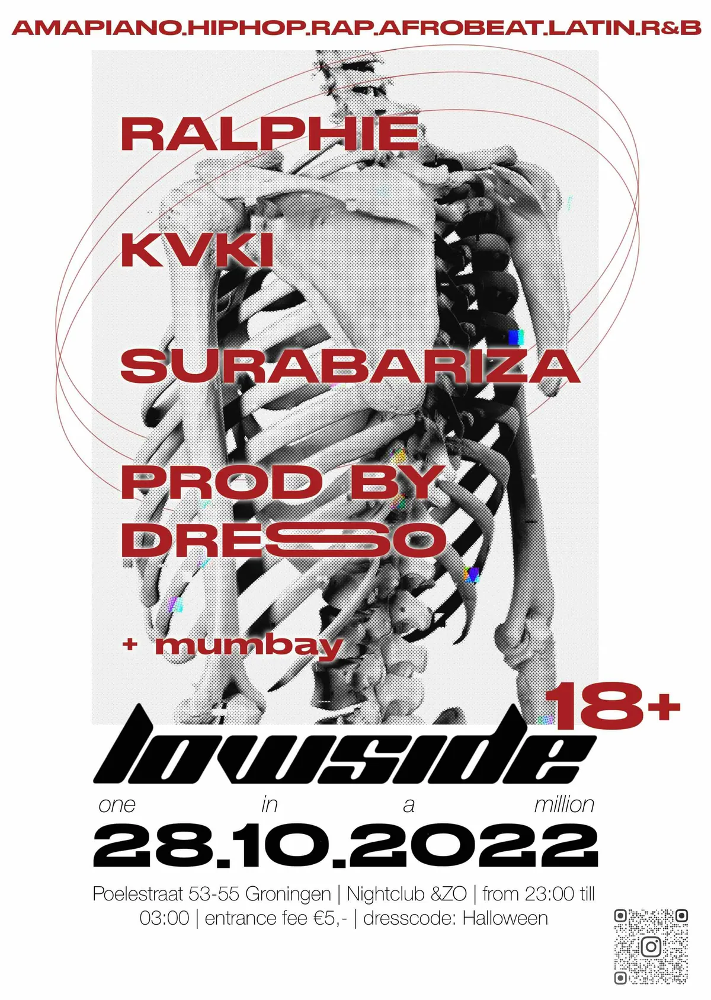
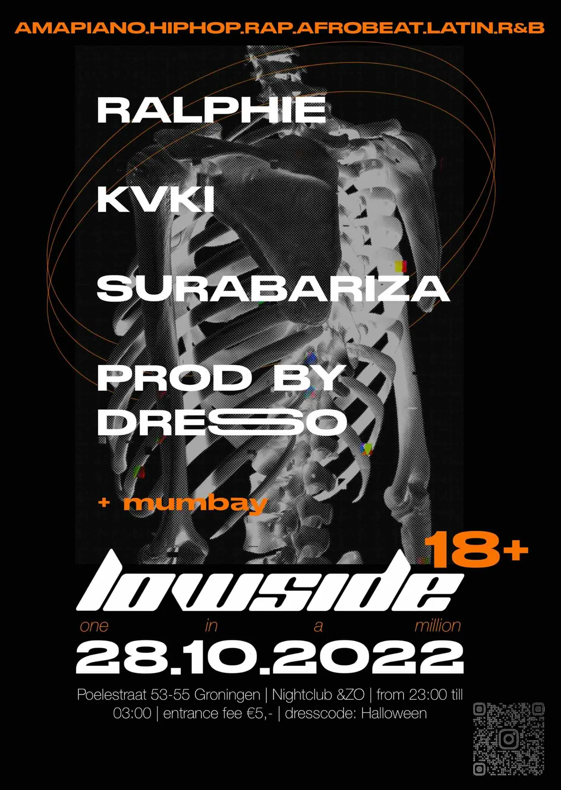